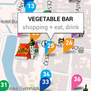
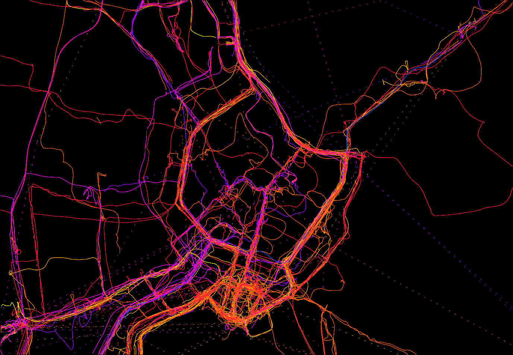
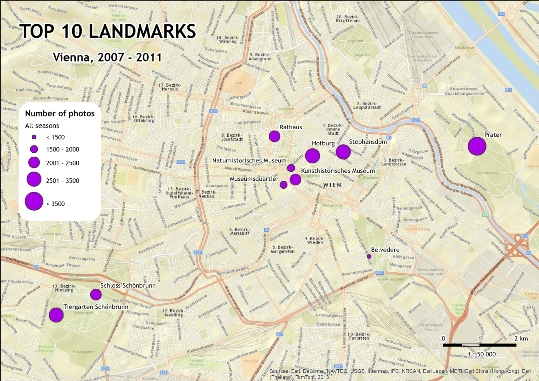

MSc. Cartography
international master program in Cartography
2012 - 2014
Study program named International Master of Science in Cartography is a cooperation of three European universities:
- Technische Universität München (TUM)
- Technische Universität Wien (TU Wien)
- Technische Universität Dresden (TU Dresden)
Master thesis
- Master thesis: Visual Reconstruction of Archaeological Data (Diana sanctuary in Nemi, Italy)
Projects:

Mobile Cartography
Creation of Android map application USE-IT České Budějovice
Group project with Alice Rühl

Radar Cartography
Extraction of the map of the Sudd wetlands, central Africa based on the radar imaginary

Multimedia project
Creation of an interactive map of Vienna
Group project with Alice Rühl
JavaScrip, D3

Multimedia project
Beginnings with D3 and SVG

Map creation project
Visualization of GPS tracking of students movement in Vienna
ArcMap, Adobe InDesign

LBS project
Analysis of Flickr data in order to get the top 10 landmarks in Vienna
Group project
Final presentation

Web mapping project
My first webpage
Includs Google API, OSM, mapping services